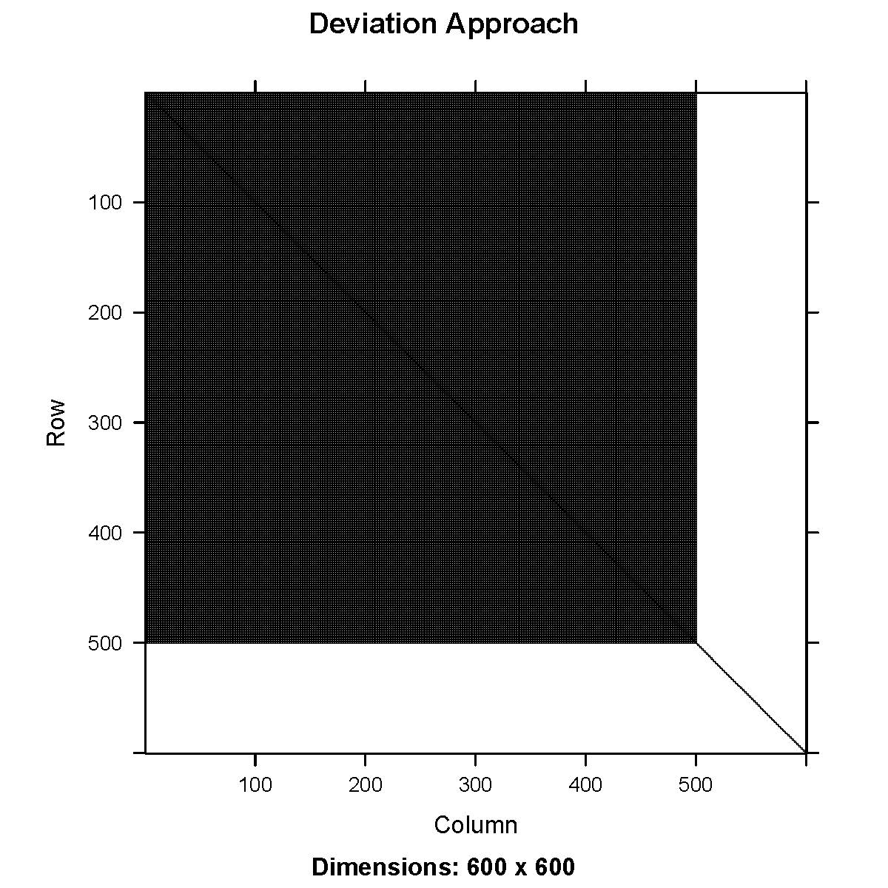
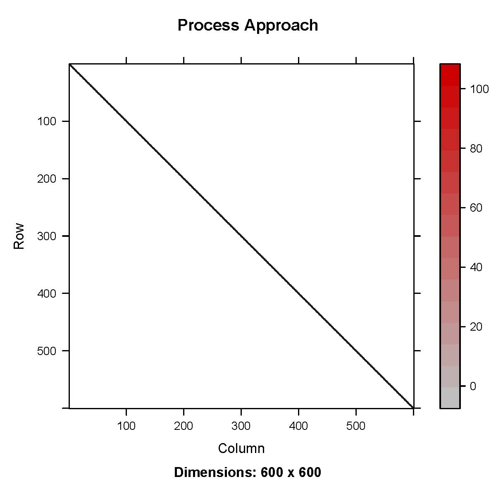
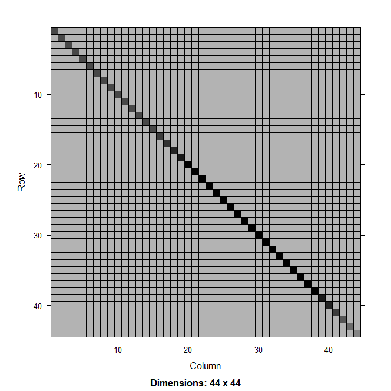
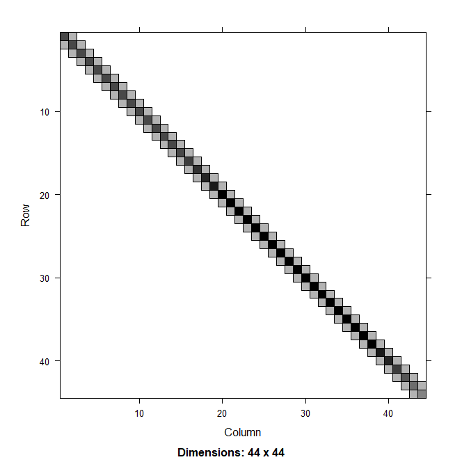

Introduction
Many stock assessment models in the U.S.A. have historically used a hierarchical approach when estimating time-varying process variability in model parameters such as recruitment. In this approach a mean parameter value , and annual deviation values, , are estimated and combined to produce annual parameter estimates with deviations often being additive or multiplicative of the mean. Models utilizing this approach have predominantly implemented deviations as estimated fixed effects. In several tools, such as Stock Synthesis, sum to zero constraints have been applied to ensure that Hessian matrices are positive definite. A fixed-effect vector of deviation parameters does not require second order partial derivatives to be estimated until model optimization is complete and variance is estimated.
Following statistical best practices, FIMS incorporates the use of random effects to model process variability in time-varying parameters. Uncertainty in the random effects is integrated out during parameter optimization in TMB using the Laplace approximation. This integration requires the calculation of second-order partial derivatives and inversion of the Hessian at each optimization step. While simple to interpret and implement, the deviations approach results in a dense covariance matrix of correlations between the mean and each annual deviation estimate. Due to this difference, using the deviations approach in a random effects model has a much larger computational penalty than when only fixed effects were considered in historic modeling platforms.
To quantify the magnitude of this penalty we investigate the performance and optimization time of a simple random effects model under equivalent sparse vs dense parameterizations. For this example we utilize two simple proxy models; an auto regressive AR1 function and a simple stock assessment model based on babySAM. These proxies should reflect the relative performance gains expected in the real-world correlated time-varying processes modeled in stock assessments such as recruitment. Each of these time-series models can be parameterized as a dense matrix, representing the traditional parameter deviations as a random-effects approach, or as a sparse matrix, as would be achieved by directly estimating annual parameter values as random effects.
These two approaches are anticipated to produce mathematically equivalent results while differing in their computational overhead. Confirming this equivalency and quantifying the runtime improvement will provide support for the change in approach relative to previous assessment models.
Methods
Time-series model
We evaluated a simple time-series model where the latent state, , at time follows an AR1 process defined as: , using two parameterizations:
- process approach:
- deviations approach:
is the autoregressive coefficient, transformed as: which ensures remains in the range (-1,1).
is the process standard deviation.
The stationary variance of the process is:
Under a random-effects model, the process approach puts the random effect on , while in the deviations approach, the random effect is applied to . Though we use the process and deviations terminology to contrast these approaches, the statistical literature often refers to these as centered and non-centered parameterizations, respectively (Stan User’s Guide 2025; Reparameterization and Change of Variables). The joint negative log likelihood for this process is computed in state-space form where the process of the current time step is dependent on the previous one and observations, are iid Normal:
# deviations approach
nll <- dnorm(z[1], 0, sqrt(sd * sd / (1 - phi * phi)), log = TRUE)
nll <- nll - sum(dnorm(z[-1], 0, sd, log = TRUE))
lamda <- numeric(length(z))
lamda[1] <- 0 + z[1]
for (i in 2:timeSteps) {
lamda[i] <- phi * lamda[i - 1] + z[i]
}
nll <- nll - sum(dnorm(y, lamda, sdo, TRUE))
# process approach
nll <- nll - dnorm(lambda[1], 0, sqrt(sd * sd / (1 - phi * phi)), log = TRUE)
nll <- nll - sum(dnorm(lambda[-1], phi * lambda[-length(lambda)], sd, log = TRUE))
nll <- nll - sum(dnorm(y, lambda, sdo, TRUE))Under this formulation, the process approach results in a sparse Hessian which is a function of the inverted covariance matrix, while the deviations approach results in a dense Hessian (Fig 1). Models were evaluated with RTMB (Kristensen, 2019) using the TMB package (Kristensen et al., 2016) in R (R Core Team, 2024). TMB relies on the Laplace approximation to integrate out random effects during an inner optimization step, and afterwards, the joint negative log likelihood is minimized with respect to the fixed effects. The Laplace approximation requires up to the second-order partial derivatives of the joint negative log likelihood with respect to the random effects to be evaluated at each inner optimization step. The computation cost of the Laplace approximation is primarily determined by the cost of inverting the Hessian, which is for N-dimensional parameter space. As the number of random effects increases, the computational cost of inverting the dense Hessian from the deviations approach increases rapidly. Sparsity reduces this computational cost to for an AR1 model, resulting in a slower increase in computational cost with increasing .


Figure 1. Hessian matrix for a first-order autoregressive (AR1) process using deviations approach (left) and process approach (right).Catch-at-age model
We compared the deviation and process approaches in a simple catch-at-age stock assessment model by extending an RTMB version of SAM, originally written by Anders Nielsen. The SAM model structures recruitment, numbers at age, and fishing mortality as AR1 processes.
The case study is built off of an existing SAM model data set,
fit.
Parameters
We modified the model to structure recruitment under both the deviation and process approaches. The main structure for recruitment for years 2 and greater was applied to the numbers-at-age parameter, for year and for age 1 with mean recruitment , written as the following:
deviations approach:
process approach:
Code
The joint negative log likelihood for recruitment under each approach was computed using the state space form as:
# deviations approach
# AR1 for standard normal innovations at initial condition
jnll <- jnll - dnorm(z[1], 0, sqrt(sdR * sdR / (1 - phi * phi)), log = TRUE)
# AR1 standard normal innovations for remaining years
jnll <- jnll - sum(dnorm(z[-1], 0, sdR, log = TRUE))
# transform innovations (z) to get recruitment deviations
rec_dev <- numeric(nrow)
rec_dev[1] <- z[1] # initial condition
# Set recruitment as random walk + transformed deviations
for (y in 2:nrow) {
rec_dev[y] <- phi * rec_dev[y - 1] + z[y]
# Random walk with optional intercept
logN[y, 1] <- mean_recruitment + rec_dev[y]
}
# process approach
# AR1 initial conditions
jnll <- jnll - dnorm(logN[1, 1], mean_recruitment, sdR / sqrt(1 - phi^2), log = TRUE)
# remaining time series
jnll <- jnll - sum(dnorm(logN[-1, 1], mean_recruitment + phi * (logN[-nrow, 1] - mean_recruitment), sdR, TRUE))Catch-at-age models compared recruitment with the mean recruitment estimated versus fixed at zero to compare model parameterizations common in Europe (fixed) and the U.S.A. (estimated) to ensure the inclusion of the mean recruitment parameter did not influence the sparsity of the Hessian. In the context of European models, mean recruitment is not zero neither is it estimated. Rather, the initial recruitment is estimated using a large variance term and subsequent recruitment values are a function of the previous time step. Mean recruitment can then be derived as the mean of the recruitment time series.
We ran a speed test by repeating model runs on the catch-at-age model 25 times, each time modifying the observation variance parameter using random noise from a normal distribution with standard deviation of 0.03. We compared computational times from the speed test and compared parameter estimates, including recruitment from the first model run.
Results
For each group of models (AR1 and catch-at-age with and without the fixed effect recruitment mean), we can compare models with the deviations and process parameterization. We compared (1) likelihoods, (2) means of fixed-effect parameters, (3) variances of fixed-effect parameter, and (4) estimated mean and variances of recruitment deviations. For all comparisons, we found parameters to be perfectly correlated between the deviations and process approaches.
The process approach resulted in a sparse Hessian while the deviations approach resulted in a dense one (Fig. 2). Results from the speed test indicated the process approach was approximately 2x times faster than the deviations approach both with and without an estimated intercept (Table 1). While speed up for a single AR1 process is minimal, more complex stock assessments currently include AR1 random effects in multiple processes (e.g., numbers at age, maturity, mortality, etc.). The computational cost of fitting the deviations approach scales significantly, warranting the need to adopt the more computationally efficient process parameterization when estimating AR1 processes as random effects.
Table 1. Results from speed test (in seconds) from running models 25 times. The standard deviation (SD), minimum (Min), and maximum (Max) of the run times are also shown. Note that absolute results are machine dependent but relative results will be consistent across operating systems and machine specifications.
| Intercept | Model | Mean time (sec) | SD | Min | Max |
|---|---|---|---|---|---|
| Y | process | 1.381 | 0.642 | 0.957 | 3.635 |
| N | process | 1.561 | 0.620 | 1.163 | 4.473 |
| Y | deviations | 2.976 | 1.695 | 2.070 | 9.903 |
| N | deviations | 3.372 | 1.324 | 2.614 | 9.613 |


Figure 2. Hessian matrix for random effects model with a first-order autoregressive (AR1) process on recruitment in a catch-at-age model using deviations approach (left) and process approach (right).